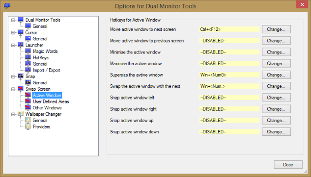
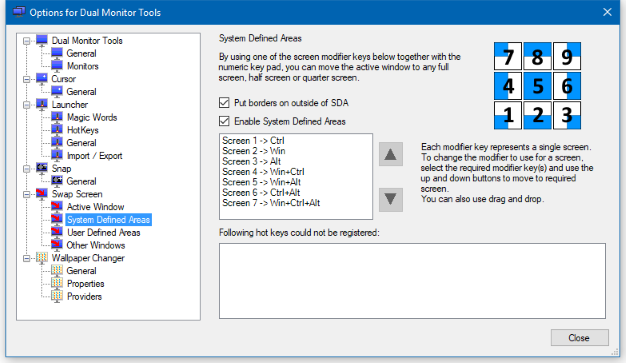
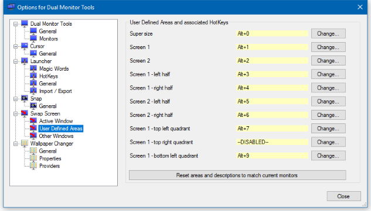
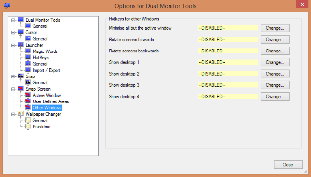

DMT Swap Screen
DMT Swap Screen
Swap Screen uses hotkeys to simplify the process of handling windows in a multiple monitor setup.
This includes features such as moving the current window to the next screen and minimising all windows on a single screen only.
'Active Window' options
This contains hotkeys which have an impact on the active window only.
Move active window to next screen
This moves the active window onto the next screen, even if it is currently maximised.
If you are running Windows 7, then Windows 7 already provides this functionality with the
Win+Shift+<Right> hotkey. If you are happy with this, then you can disable Swap Screen's hotkey for this. However you may find this combination is quite cumbersome in which case you can define your own simpler hotkey.
Move active window to previous screen
This performs the opposite of Move active window to next screen.
If you are running Windows 7, then Windows 7 already provides this functionality with the
Win+Shift+<Left> hotkey.
If the active window can be minimised, then it is minimised.
If it is already minimised, then it is restored.
If you are running Windows 7, then Windows 7 already provides this functionality with the
Win+<Down> hotkey.
If the active window can be maximised, then it is maximised.
If it is already maximised, then it is restored.
If you are running Windows 7, then Windows 7 already provides this functionality with the
Win+<Up> hotkey.
If the active window can be resized, then it is made large enough to cover all screens.
This may mean that part(s) of the window may not be visible if your screens have different resolutions,
or if you have a fixed taskbar displayed.
If you press the hotkey again on a window that has just been supersized, then the window is restored to its
previous location and size.
Swaps the positions of the top two windows around.
Moves the active window to the previous half screen (splitting each screen into 2 columns).
This is similar to the Windows 7 feature using Win+<Left>, except this will
only cycle through the half screens and not the normal size of the window.
Moves the active window to the next half screen (splitting each screen into 2 columns).
This is similar to the Windows 7 feature using Win+<Right>, except this will
only cycle through the half screens and not the normal size of the window.
Moves the active window to the previous half screen (splitting each screen into 2 rows).
Moves the active window to the next half screen (splitting each screen into 2 rows).
'System Defined Areas' options
These allow you to move the active window to a System Defined Area (SDA).
A particular combination of the Shift, Ctrl, Win and Alt keys are used to identify each screen. You can adjust the combination to use for a particular screen by moving the lines up or down in the box shown in the center of the above screenshot.
The numeric pad keys are then used to define 9 areas on each screen:
- <Num 5> - The full screen
- <Num 4> and <Num 6> - The left and right screen halves
- <Num 8> and <Num 2> - The top and bottom halves
- <Num 7>, <Num 9>,< <Num 1> and <Num 3> - the 4 screen quadrants
So in the screenshot above, Ctrl+<Num 7> would move the active window to to top left quarter of the first screen, and Win+<Num 3> would move it to the bottom right quarter of the second screen.
It is possible that Some key combinations may not be available, either because they are in use by other applications or by DMT itself for other functions. If there are any that are not available, then they will reported in the area at the bottom of the screen. If this happens, you can just try different modifier keys.
'User Defined Areas' options
These allow you to move the active window to a User Defined Area (UDA).
You can specify up to 100 screen areas that you would like to be able to move the active window to with a hotkey.
Unlike previous versions of DMT, there is now no automatic generation of UDAs as this functionality is now provided by SDAs.
'Other Windows' options
This contains hotkeys which have an impact on all or multiple windows.
Minimise all but active window
This will attempt to minimise all windows apart from the active window.
If you are running Windows 7, then Windows 7 already provides this functionality with the
Win+<Home> hotkey.
This will attempt to move every application window onto the next screen from where it is currently displayed.
This does the reverse of Rotate screens forwards.
Show Desktop that cursor is on
This will attempt to minimise all application windows on the screen that the cursor is currently on.
This will attempt to minimise all application windows on the given screen.
Application windows
Swap Screen attempts to detect those windows which it would not make sense to move and ignores them.
The following windows will not be moved or minimised by SwapScreen:
- Any window that does not have the WS_VISIBLE attribute set.
- Any window that has been deliberately positioned off-screen.
- Any window with the WS_EX_TOOLWINDOW style, unless this is the active window and you are performing an operation on the active window.
If the Swap Screen hotkey is used when running a full screen application, normally a game, then with some games the image on the primary screen is copied to the next screen, but the game continues on the primary screen. However this does not work with all games. In some cases you may find that you have to press the hotkey again to restore normal operation of the game, and in others it can mess the current game up so use with caution.